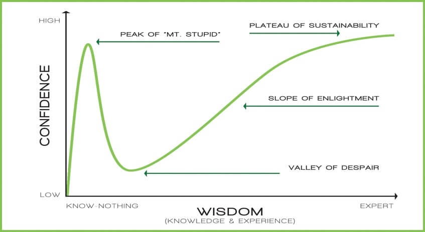

কোনো এক মনীষী বলেছিলেন, “আমি জ্ঞানের সাগর পাড়ি দেয়ার জন্য কেবল নৌকায় উঠেছিলাম মাত্র, তাতেই আমার সময় শেষ হয়ে এল।” দেখুন তাহলে, কত জ্ঞানী একজন মানুষ হয়েও তিনি এই কথা বলেছেন, আর এদিকে আমরা সাধারণ মানুষেরা কোনো বিষয়ের ওপর নিজেদের পাণ্ডিত্য প্রকাশ করতে পারলেই বুঝি বাঁচি। কোনো বিষয় জেনে বা না জেনে বা সামান্য জেনেই আমরা সেটা নিয়ে আমাদের পাণ্ডিত্য দেখাই। তবে না জেনে বা সামান্য জেনে পাণ্ডিত্য ফলানোর এই অভ্যাসটা যখন বাড়াবাড়ি পর্যায়ে চলে যায়, তখন সেটাকে একটা মানসিক রোগ বলে, যার নাম হচ্ছে ডানিং-ক্রুগার ইফেক্ট। যখন কোনো মানুষ না জেনেও জানার ভান করে, নিজেকে অতিজ্ঞানী বা সবজান্তা ভাবতে শুরু করে, তখন সেটা ডানিং-ক্রুগার ইফেক্ট নামক এই কগনিটিভ বায়াস-এ পরিণত হয়।
আমাদের প্রিয় ওবায়দুল কাদের স্যারের একটি জনপ্রিয় উক্তি হলো, “আমরা করোনার চেয়েও শক্তিশালী!” এছাড়াও তিনি বিভিন্ন সময় বিভিন্ন রকম উক্তি করে থাকেন যাতে মনে হয় তিনি বুঝি সব জানেন! কাদের স্যার ডানিং-ক্রুগার ইফেক্টে আক্রান্ত কিনা সেটা হয়তো গবেষণা করে বলা যাবে কিন্তু তার এসব উক্তি/আচরণ এই ইফেক্টের চমৎকার উদাহরণ হিসেবে দিব্যি চালিয়ে দেওয়া যায়। মজার ব্যাপার হলো, ডানিং-ক্রুগার ইফেক্ট আমরা আমাদের অজান্তেই চারপাশে প্রত্যক্ষ করি। যেমন কেউ পরীক্ষায় কম নম্বর পেয়ে শিক্ষকের উপরই চেঁচায়। হয়তো সে ই লিখতে ভুল করেছিলো। আবার বেশি জ্ঞানসম্পন্ন কোনো ব্যক্তি কম জ্ঞানসম্পন্ন কোনো ব্যক্তির কাজের গঠনমূলক সমালোচনা করলে সেই কম জ্ঞানসম্পন্ন ব্যক্তি ভাবে, “এ্যাহ, আইছে মহাজ্ঞানী!” হয়তো জ্ঞানসম্পন্ন ব্যক্তিটির গঠনমূলক সমালোচনা ঠিক ই ছিল। এবার আমার জায়গা থেকেই একটা উদাহরণ দেই। তাসমীম রেজা আর রেজওয়ান আরেফিন হলেন বাংলাদেশের টপ কম্পিটিটিভ প্রোগ্রামার। তারা প্রোগ্রামিংয়ের কত কিছু জানার পরেও ভাব দেখান না যে তারা অনেক জানেন। আর এদিকে শুধু Hello World প্রিন্ট করতে পারা কিছু নতুন প্রোগ্রামার এমন ভাব দেখায় যে তারা মনে হয় ওয়ার্ল্ডের টপ প্রোগ্রামার। যাই হোক এখন সোজা কথায় বলি, কোনো ব্যক্তি যখন কম জানা সত্ত্বেও নিজেকে নির্দিষ্ট বিষয়ের ওপর যথেষ্ট বা অন্যের চেয়ে বেশি জ্ঞানী বলে বিবেচনা করেন এবং তদ্রূপ আচরণ করেন, তখন তিনি ডানিং-ক্রুগার ইফেক্টে ভোগেন। তো চলুন জানি এই ডানিং-ক্রুগার ইফেক্ট টা আবিষ্কার হলো কিভাবে এবং কে বা কারা এটা আবিষ্কার করলো।
১৯৯৫ সালের এক দিনে আমেরিকার পিটসবার্গের এক ৪৪ বছর বয়সী বাসিন্দা ম্যাকআর্থার হুইলার হঠাৎ করে জানতে পারলো লেবুর রসের এক জাদুকরী ক্ষমতার কথা। লেবুর রস নাকি অদৃশ্য কালি (invisible ink) হিসেবে ব্যবহার করা হয়। (আগে গোপনে বার্তা পাঠানোর জন্য লেবুর রস/পেঁয়াজের রস/ভিনেগার দিয়ে কাগজের উপরে লেখা হতো। এমনিতে লেখা বোঝা যেত না, কিন্তু কাগজটাকে আগুনের হালকা তাপে ধরলে লেখাগুলো বোঝা যেত।) লেবুর রসের সেই জাদুকরী ক্ষমতার কথা শুনে ব্যাপারটা নিয়ে সামান্য একটু পড়ে সে এই সিদ্ধান্তে পৌছালো যে, কোনো কিছুর উপরে লেবুর রস মাখালেই তা অদৃশ্য হয়ে যাবে। এখন তার আবিষ্কৃত এই থিওরি তো প্রমাণ করতে হবে। তাই সে একটা পোলারয়েড ক্যামেরা কিনে সেটা দিয়ে নিজের একটা ছবি তুলল। ক্যামেরার কোনো এক ত্রুটির কারণে কোনো ছবিই উঠলো না। তবে সে তো আর ত্রুটির কথা জানে না, তাই সে ধরে নিল সে যে থিওরি বের করেছে অর্থাৎ কোনো কিছুর উপরে লেবুর রস মাখালেই তা অদৃশ্য হয়ে যাবে সেটি ঠিক। তারপর সে ভালোভাবে সারা শরীরে লেবুর রস মেখে আর কিছু অস্ত্র-টস্ত্র নিয়ে বেরিয়ে পড়লো ব্যাংক ডাকাতি করার জন্য। সেইদিন সে দুইটা ব্যাংক ডাকাতি করলো। ব্যাংকের সিসি ক্যামেরার দিকে তাকিয়ে হাসিও দিলো। সকালে ব্যাংক ডাকাতি করার পরে সিসি ক্যামেরার ফুটেজে তার হাসিমুখ দেখে রাতের ভিতরেই পুলিশ তাকে ধরে ফেলল। পুলিশ তাকে ধরে ফেলার পরে সে পুলিশকে জিগ্যেস করে যখন জানতে পারলো তাকে সিসি ক্যামেরায় দেখে তারা ধরেছে, সে কিছুতেই তা বিশ্বাস করে নাই। এমনকি যখন কোর্টে তার বিচার চলছিল তখনও জজ, উকিল, জুরি, পুলিশ কেউ তাকে বিশ্বাস করাতে পারে নাই যে তাকে সিসি ক্যামেরায় দেখা গেছে। কারণ লেবুর রস মেখে যে অদৃশ্য হয়ে যাওয়া যায়, তার নিজস্ব উদ্ভাবিত এই থিওরির উপরে তার অগাধ বিশ্বাস ছিল। সেই বিশ্বাসের ভিত কেউই টলাতে পারে নাই।
এই অদ্ভুত ঘটনার কথা জানতে পারেন কর্নেল ইউনিভার্সিটির ডেভিড ডানিং আর জাস্টিন ক্রুগার। তারা এই ব্যাংক ডাকাত মহাশয়ের নিজস্ব উদ্ভাবিত এই থিওরির উপরে এত দৃঢ় আস্থা দেখে একটা সায়েন্টিফিক এক্সপেরিমেন্ট চালালেন বেশ কিছু মানুষের উপরে। এই এক্সপেরিমেন্ট শেষ করার পরে তারা বুঝতে পারলেন যে, যেসব মানুষ অল্প জানে তাদের সেই অল্প জানা জ্ঞানের উপরে অনেক বেশি আস্থা। তারা পুরো ব্যাপারটার একটা গ্রাফ তৈরী করলেন। গ্রাফের এক দিকে দিলেন জ্ঞান (Wisdom), আরেক দিকে দিলেন আত্মবিশ্বাস (Confidence)। দেখা গেল যাদের জ্ঞান শুন্য তাদের আত্মবিশ্বাস ও শুন্য। কিন্তু যাদের জ্ঞান সামান্য অর্থাৎ যারা অল্প-স্বল্প জানে তাদের আত্মবিশ্বাস সবচাইতে বেশি। তারা গ্রাফের এই উচু অবস্থানের নাম দিলেন Mount Stupid. তাঁরা দেখলেন যেসব লোক অল্প সল্প জেনে এই Mount Stupid -এ বাস করে তারা তাদের মতামত খুব আত্মবিশ্বাসের সাথে জোরালো ভাবে আঁকড়ে ধরতে পারে বা বলতে পারে বা প্রতিষ্ঠিত করতে পারে। যেহেতু তারা যতটুকু জানে তা খুব জোরালো ও আত্মবিশ্বাসের সাথে প্রকাশ করতে পারে, সেহেতু তাদের অনুসারী ও অনেক বেশি থাকে এবং একটা পর্যায় পর্যন্ত তাদেরকে অনেকেই বিশ্বাস করে। বিশেষ করে যারা তাদের চাইতে কিছুটা কম জানে অথবা যারা একেবারে কিছুই জানে না। এই গবেষণার পরেই বিজ্ঞানীরা এই ইফেক্টের নাম দিলেন ডানিং ক্রুগার ইফেক্ট (Dunning-Kruger effect)।
ডানিং-ক্রুগার ইফেক্টের পাঁচটা পর্যায় আছে।
(১) মাউন্ট স্টুপিড এর চূড়া (Peak of Mount Stupid): এই পর্যায়ে যারা আছে তাদের আত্মবিশ্বাস সবচাইতে বেশি থাকে। এই পর্যায়ের লোকেরা মনে করে তারা সবকিছুই জানে। ডেভিড ডানিং আর জাস্টিন ক্রুগার তাদের রিসার্চ পেপারে বলে গেছেন এই পর্যায়ের লোকের কোনো কিছু পুরোপুরি বোঝার ক্ষমতা আসলে এতটাই কম যে, তারা যে আসলে কম জানে অথবা ভুল জানে তা বোঝার ক্ষমতাই তাদের নেই।
(২) হতাশার ঢাল (Slope of Despair): এই পর্যায়ে এসে মানুষ ভাবতে থাকে, “মনে হয় বিষয়টা যত সহজ ভেবেছিলাম তার চাইতে কিছুটা কঠিন”। তখন আস্তে আস্তে তাদের আত্মবিশ্বাস কমতে থাকে। এরপর তারা বিস্তারিত জানার চেষ্টা করে এবং বিষয়টা নিয়ে পড়তে শুরু করে।
(৩) হতাশার উপত্যকা (Valley of Despair): এই পর্যায়ে এসে কোনো বিষয় পড়তে পড়তে মানুষ যখন সেটার গভীরে চলে যায় তখন তার মনে হয় জানার কোনো শেষ নাই। তখন সে বুঝতে পারে সে আসলে যতটুকু জানে তার চাইতে অনেক অনেক বেশি গুণ সে জানে না। ব্যাপারটা জানার পর সে হতাশায় আচ্ছন্ন হয়ে যায়। এই পর্যায়ে আত্মবিশ্বাস একদম তলানিতে থাকে।
(৪) বোধোদয় এর ঢাল (Slope of Enlightment): এই পর্যায়ে আসার পরে পড়তে পড়তে সে বুঝতে পারে যে, সে ব্যাপারটা সম্পর্কে কিছুটা হলেও জানে। এই সময় আত্মবিশ্বাস আস্তে আস্তে কিছুটা বাড়তে থাকে। তলানি থেকে উপরের দিকে উঠতে থাকে।
(৫) ধারণক্ষমতার মালভূমি (Plateau of Sustainability): এই পর্যায়ে যারা থাকে তাদেরকে আমরা আসলেই জ্ঞানী বলে ধরে নিতে পারি। কারণ এরা ঐ বিষয় পড়তে পড়তে ঐ বিষয়ের বেশিরভাগই জেনে ফেলে। তবে এরা যা জানে সেসব বিষয়ে এদের আত্মবিশ্বাস বেশি থাকলেও তা কখনোই ১ নাম্বার পর্যায় বা Mount of Stupidity তে থাকা লোকদের চাইতে বেশি না।
এতক্ষণ তো জানলাম ডানিং-ক্রুগার ইফেক্টের ইতিহাস, কিন্তু মানুষ কেন এতে আক্রান্ত হয়? আপনি হয়তো জানেন যে, ‘অল্পবিদ্যা ভয়ংকর’ বলে একটা প্রবাদ আছে। কেউ কেউ কোনো বিষয়ে অল্প জেনেই এতটা উত্তেজিত হয়ে পড়েন যে তখন তিনি আবেগের বশে ওই বিষয়ে নিজেকে পুরোপুরি সমঝদার ভাবতে শুরু করেন। আর তখনই হানা দেয় এটি। এটি কোনো ভাইরাস নয় যে কোনো মাধ্যমে আপনার মধ্যে আসবে। এটি মস্তিষ্ক এমনি এমনি তৈরি করে।
ডানিং-ক্রুগার ইফেক্ট থেকে রক্ষা পাওয়ার জন্য আমাদের নিজেদের যোগ্যতা আমাদেরকেই নিরপেক্ষ দৃষ্টিতে বিচার করতে হবে। আমরা আদতে কতটুকু জানি তা নিয়ে ভাবতে হবে। নিজের কোনো সিদ্ধান্তকে সাতপাঁচ না ভেবে মেনে নেওয়ার প্রবণতা পরিহার করতে হবে। অন্যের পরামর্শ কানে তোলার অভ্যাস করতে হবে। নিজেকে শ্রেষ্ঠ, সুবিবেচক ইত্যাদি ভাবার গোঁড়ামি করা যাবে না। জ্ঞানী লোকের পরামর্শ গ্রহণের মানসিকতা থাকতে হবে। না জেনেও জানার ভান করলে অনেকসময় লজ্জাজনক পরিস্থিতির মুখোমুখি হওয়া অসম্ভব কিছু নয়। এ ধরনের বিব্রতকর পরিস্থিতি এড়ানোর জন্য হলেও আমাদের সতর্ক থাকা প্রয়োজন। আর হ্যাঁ, কারও যদি কোনো একটি সুনির্দিষ্ট বিষয়ের ওপর পারদর্শী হওয়ার ইচ্ছে থাকে, তাহলে তাকে ওই বিষয়ে পরিষ্কার ধারণা রাখতে হবে। বিষয়টি নিয়ে যদি আগাগোড়া জানা অসম্ভবপরও হয়, তথাপি তা নিয়ে জানার চেষ্টা অব্যাহত রাখতে হবে। মনে রাখতে হবে, জানার কোনো শেষ নাই।